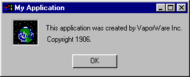
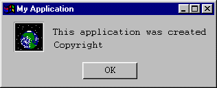
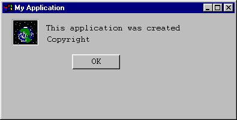
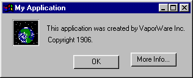
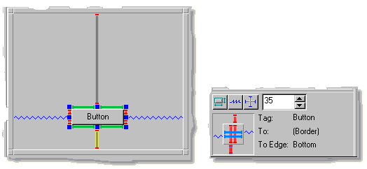
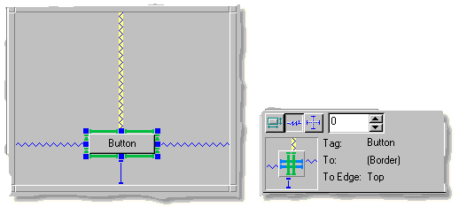
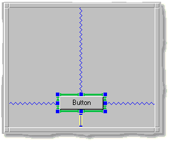
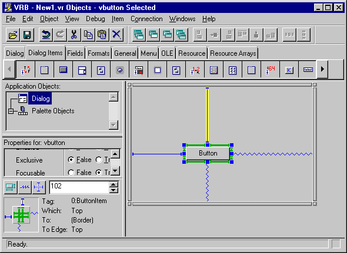

This overview discusses and answers the following questions:
Consider a simple "About My Application" dialog box. It might look
like this:

But when the application runs on different platforms, or even different
installations on the same platform, the About dialog may be forced to use
different fonts:

If a user resizes the dialog, it may not handle repositioning of the objects
elegantly.

Or last minute changes just before release may force the addition of items
that disturb a previously elegant design.

Galaxy provides geometry management tools to help you easily solve such
problems. The key concept behind Galaxy geometry management is the "spring
solution."
A spring solution is the entire sizing and location information for a
single dialog. The spring solution is usually created visually with
the Visual Resource Builder and is stored with the dialog in the resource
(.vr) file. The dialog uses the spring solution to position
its contents in response to resizing, look-and-feel changes, and other
platform-specific issues.
Spring solutions also apply to containers, since containers, like
dialogs, manage the location and sizing of their contents.
Each spring solution is made up of individual "connections." While you might
refer to a dialog's "spring solution", you refer to an individual dialog
item's sizing and location information as that dialog item's "connections."
The Spring Editor shows the different types of connections.

In general, there are two types of connections:
- Outside Connections
Connects an edge of a dialog item to the edge of a dialog (or
container), or to the edge of another item. Outside connections
determine the relative positions of dialog items in a dialog,
including how items reposition themselves when the dialog is
resized.
- Inside Connections
Connects an edge of a dialog item to the opposite edge
within the same item. Inside connections determine how an item
resizes itself in relation to its contents.
Specifically, each dialog item has the following six connections:
- Inside Width
Determines the width of the dialog item.
- Inside Height
Determines the height of the dialog item.
- Outside Top
Determines the distance between the top of the dialog item and
the next dialog item (or the border of the dialog).
- Outside Bottom
Determines the distance from the bottom of the dialog item to
the next dialog item (or the border of the dialog).
- Outside Left
Determine the distance between the left edge of the dialog item
and the next dialog item (or the border of the dialog).
- Outside Right
Determine the distance between the right edge of the dialog
item and the next dialog item (or the border of the dialog).
Connection Types
A connection can be any of the following types:
- Strut
A fixed length connection that is always sized according to a
specific value. Struts are drawn as solid lines.
- Spring
A spring is elastic; it expands or contracts to fill the space
to the connected edge. Springs are drawn as zig-zag lines.
Springs allow items to move, relative to
connected edges, in response to a dialog's resizing event.
- Natural Length
A connection that automatically resizes itself according to the
size of its contents. For example, a natural sized button
resizes itself so it can display its title, even when the title
changes size. Natural length connections are drawn green.
On monochrome displays, natural length
connections are shown as thicker connections.
- Spring and Strut
A combination of a spring and a strut; the connection behaves
like a spring but never becomes smaller than a specified size.
It is also possible to "lock" a strut. A locked strut fixes the
connected item(s) in place in the Dialog Editor. This allows you to
preserve complex connection specifications while working in other
areas of the Dialog Editor. Locking struts is an editing aid only; it
does not lock the connected item(s) in the actual application dialog.
Note the following:
-
When an item is initially placed in a dialog, the outside
connections on the top and left sides of the item are
struts. The outside connections on the bottom and right sides of
the item are springs. The inside connections vary according to
the item, but are often natural-sized struts.
-
The concept of natural length connections apply to both outside
and inside connections. However, for most purposes, the concept
of natural length is only useful for inside connections.
Error Struts
If you specify an invalid chain of connected items, the bad connections
are displayed displays as error struts. Error struts are drawn in red.
On monochrome displays, error struts are drawn larger than
normal, and are "hollow."

An error occurs if a chain of connected items does not contain at
least one spring connection. The spring connection is necessary so the
items can reposition themselves when a dialog resizes. If an error
occurs when connecting items, change one of the struts to a spring.

Relative Positioning
Connections rely on the relative positioning of items to other items
and to the edges of a dialog or container.
For example, you can use the Visual Resource Builder to set the relative positioning
of a button. Here, the button is set to always be centered (left and
right) within the dialog; both the left and right outside connections
are springs. Additionally, the button will always remain a fixed
distance of 30 pixels from the bottom of the dialog; the bottom
outside connection is a strut with a value of 30.

Note that you do not always have to specify a specific set of coordinates to
position the items. In the above example, it wasn't necessary to set a value
for the left and right outside connections, just attach the springs to
either side of the dialog.
Additionally, you can use natural length struts for the inside connections
to specify that the button always resizes itself to accommodate the title
displayed on the button.

To repeat, the above spring solution specifies that the button will
always be centered (left and right) and positioned 30 pixels from the
bottom of the dialog, regardless of the following:
- Size of the dialog
- Runtime platform
- Title of the button
- Font displaying the button's title
This is handled automatically by Galaxy without needing to recompile or
invoke any special application code.
Connections "connect" an edge of an item to either an edge of another
item or to the edge of a dialog (or container). You can select a
connection by clicking on it with the pointer in the Dialog Editor or
the Spring Editor. A selected connection is highlighted in yellow.
The outside connections can be dragged and attached to another dialog
item or to the border of the dialog. As you drag a connection around
the dialog or container, the connection automatically jumps to the
edge closest to the pointer's position. Release the mouse button to
attach the connection to that edge.
You can specify the type of connection by selecting the desired connection,
and then either using the Spring Editor or
the Connection menu.
In addition to the different spring types, the Connection menu
contains several useful submenus, such as "Reflect" or "Chain." These are
discussed in greater detail in Using Connections.
This concludes the overview on geometry management. The next section,
Using Connections, provides information on
using and creating connections for your application.
[Return to Top]